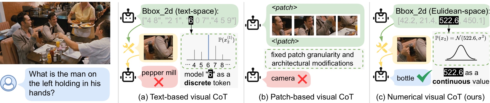
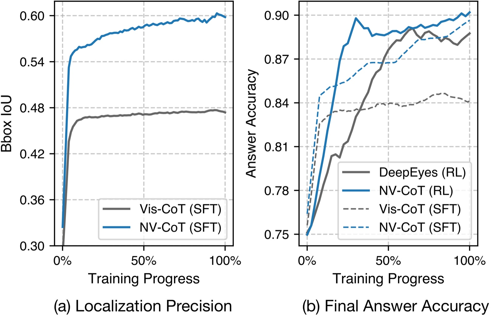
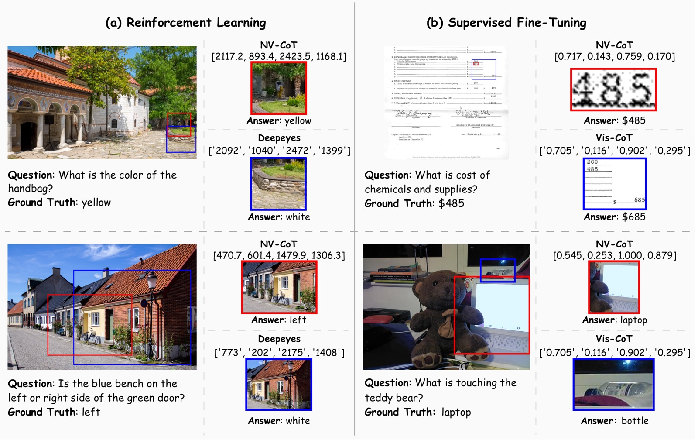

A
Text-based visual CoT
“42”“.”“2”“,”“521”“.”“6”
Geometry becomes language.
Token cross-entropy ignores spatial proximity and fragments numbers into unrelated pieces.
NeurIPS 2026 Oral · Computer Vision
Numerical Visual Chain-of-Thought expands multimodal language models beyond discrete tokens—letting them point, zoom, and reason with precise numerical coordinates.

Fig. 01 Coordinates are geometry—not words.
01 — The idea
Text tokens flatten geometry. Fixed patches quantize it. NV-CoT keeps localization where it naturally lives: a continuous Euclidean action space.
Text-based visual CoT
Token cross-entropy ignores spatial proximity and fragments numbers into unrelated pieces.
Patch-based visual CoT
Fixed visual granularity constrains precise region selection and often requires deeper model changes.
NV-CoT · ours
[42.2, 21.4, 522.6, 450.1]
A lightweight coordinate head predicts boxes as continuous actions, preserving geometric structure.
02 — Abstract
Recent multimodal large language models increasingly rely on visual chain-of-thought for region-grounded reasoning. Yet existing methods either serialize coordinates as text—creating modality mismatch and semantic fragmentation—or operate on fixed-granularity visual patches.
NV-CoT expands the model action space from discrete vocabulary tokens to continuous numerical coordinates. With lightweight coordinate heads, Gaussian or Laplace policies, and reparameterized sampling, it supports both supervised fine-tuning and GRPO-style reinforcement learning. Experiments across three high-resolution benchmarks show improved localization, final-answer accuracy, and convergence speed.
Read the full paper03 — Method
NV-CoT retains the language vocabulary while adding a compact continuous head. The model can speak in tokens and act in coordinates—inside the same reasoning trajectory.
Shared hidden representation
b = μ + σε
sample → crop → inspect
Coordinate positions use a regression objective while language positions retain standard cross-entropy.
The model predicts location and uncertainty, then samples differentiable coordinate actions.
Analytic likelihood ratios and KL terms bring continuous actions into the standard RL pipeline.
04 — Results
Across high-resolution reasoning benchmarks, replacing textified boxes with continuous actions improves both where the model looks and what it concludes.
BBox IoU · Vis-CoT-363K
V* Bench · overall
HR-Bench 4K · overall
HR-Bench 8K · overall
Single-call RL setting · DeepEyes-7B backbone
Training dynamics
Continuous coordinate learning improves localization precision and reaches higher answer accuracy faster than text-coordinate baselines.

05 — Qualitative results
NV-CoT selects tighter, semantically relevant regions across natural scenes, documents, spatial questions, and OCR-heavy examples.

06 — Citation
If NV-CoT helps your research, please cite the paper.
@article{zhao2026thinking,
title={Thinking with Images as Continuous Actions:
Numerical Visual Chain-of-Thought},
author={Zhao, Kesen and Zhu, Beier and Zhou, Junbao
and Zhu, Xingyu and Yue, Zhongqi and Zhang, Hanwang},
journal={arXiv preprint arXiv:2602.23959},
year={2026}
}